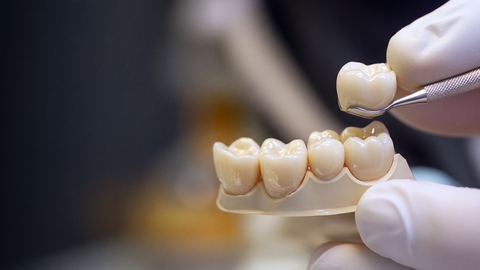
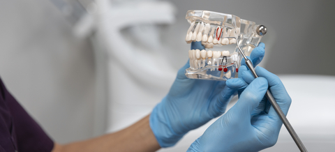
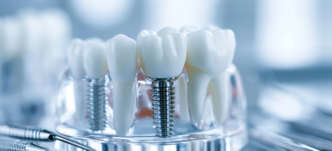
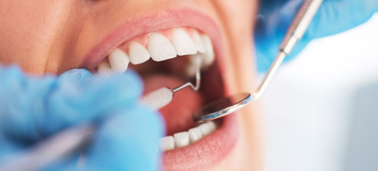
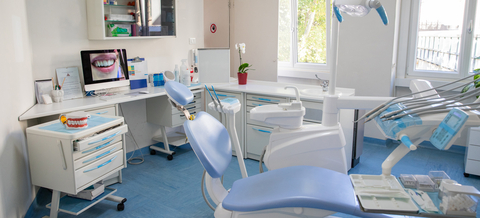

Couronne dentaire à Charenton-le-Pont
139 rue de Paris, Charenton-le-Pont · métro Liberté (ligne 8) · aux portes de Paris 12e
Qu'est-ce qu'une couronne dentaire ?
Une couronne dentaire est une prothèse fixe qui recouvre et protège une dent très abîmée, ou qui se fixe sur un implant.
Une couronne dentaire est une coiffe fabriquée sur mesure qui reproduit la forme et la couleur d'une dent, et qui vient la recouvrir entièrement. Elle est scellée ou collée de façon définitive : on ne la retire pas.
On parle de couronne dento-portée quand elle est posée sur votre dent naturelle, et de couronne implanto-portée, ou couronne sur implant, quand elle est fixée sur un implant.
Elle se pose en général en deux séances, avec une couronne provisoire entre les deux.
Plusieurs couronnes sont intégralement remboursées dans le cadre du 100 % Santé, si votre mutuelle est un contrat responsable : la couronne métallique et la couronne zircone sur toutes les dents, la céramo-métallique et la céramique hors zircone sur les dents de devant.
Le cabinet du Dr Patrick Lellouche, conventionné secteur 1, se trouve au 139 rue de Paris à Charenton-le-Pont, au pied du métro Liberté, aux portes de Paris 12e. Un devis vous est remis avant tout traitement prothétique.

Dans quels cas pose-t-on une couronne ?
Une couronne est indiquée lorsqu'une dent est trop abîmée pour être réparée par un simple plombage ou un composite.
Les situations les plus courantes :
- une dent dévitalisée, devenue plus fragile ;
- une grosse carie ou un ancien plombage très étendu ;
- une dent fêlée ou cassée ;
- une dent usée ou très abîmée ;
- le remplacement d'une dent absente, sur un implant.
Quand la dent est encore assez solide, une solution plus conservatrice comme l'inlay ou l'onlay peut suffire. Le Dr Lellouche vous indique ce qui est possible après examen.
Les matériaux : céramique, zircone, céramo-métallique ou métal
Le choix du matériau dépend de la place de la dent, de la force de votre mastication et de l'esthétique recherchée. Il a aussi une incidence directe sur le remboursement.
La couronne céramo-métallique : une armature en métal recouverte de céramique. C'est un matériau ancien et éprouvé, mais le métal peut laisser apparaître un liseré gris au bord de la gencive avec le temps.
La couronne zircone : une céramique très résistante, sans métal, qui convient aux dents de devant comme aux molaires. Depuis le 1er janvier 2026, elle fait partie du panier 100 % Santé sur toutes les dents.
La couronne céramique hors zircone, par exemple en disilicate de lithium, ou la céramo-céramique : sans métal, avec une translucidité proche de l'émail naturel. On la réserve plutôt aux dents visibles.
La couronne métallique : la plus discrète en épaisseur et la plus solide, mais grise. On la propose surtout pour les dents du fond.
La couronne provisoire, en résine, n'est pas un matériau à choisir : elle protège la dent pendant la fabrication de la couronne définitive.
Au cabinet, le Dr Lellouche propose la zircone stratifiée (céramo-céramique), la céramo-métallique et la full zircone. La zircone stratifiée relève des honoraires libres ; la full zircone peut être prise en charge sans reste à charge dans le cadre du 100 % Santé. Les couronnes sont réalisées par un laboratoire de prothèse en France, et ce lieu de fabrication figure sur le devis.

Les étapes de la pose au cabinet
La pose d'une couronne demande en général deux séances, espacées de quelques jours à deux semaines.
L'examen et le devis
Le praticien examine la dent et fait une radio. Si la dent est infectée, un traitement de canal (dévitalisation) est réalisé d'abord. Vous recevez ensuite un devis qui présente le traitement proposé et une alternative du panier 100 % Santé.
La préparation de la dent et l'empreinte
Sous anesthésie locale, la dent est taillée pour laisser la place à la couronne. Si elle est très délabrée, on peut d'abord poser un inlay-core, un ancrage dans la racine qui sert de support. Une empreinte numérique est ensuite prise avec le scanner intra-oral du cabinet, puis une couronne provisoire est posée.
La pose de la couronne définitive
La couronne provisoire est retirée. La couronne définitive est essayée, sa teinte et son contact avec les dents opposées sont vérifiés, puis elle est scellée ou collée. Cette séance se fait le plus souvent sans anesthésie.
Est-ce douloureux ?
La préparation de la dent se fait sous anesthésie locale lorsque la dent est vivante. Vous ne devriez pas avoir mal pendant la séance.
Après coup, une sensibilité au chaud et au froid ou une gencive un peu irritée peut apparaître pendant quelques jours. Avec la couronne provisoire, évitez de mâcher des aliments durs ou collants de ce côté. Si la provisoire se décolle, appelez le cabinet : il ne faut pas laisser la dent taillée à nu plusieurs jours.

Durée de vie et entretien
Une couronne dure souvent dix à quinze ans, parfois beaucoup plus. Ce qui limite sa durée de vie, c'est surtout la dent qui la porte : une carie qui se forme au bord de la couronne, une fracture de la racine ou une maladie des gencives.
Pour la faire durer :
- brossez-vous les dents deux fois par jour, en insistant sur la jonction entre la couronne et la gencive ;
- passez du fil ou une brossette interdentaire chaque jour ;
- si vous serrez ou grincez des dents la nuit, parlez-en : une gouttière de protection peut être proposée ;
- venez en contrôle régulièrement, au moins une fois par an.
Risques et limites
La couronne est un traitement courant, mais il n'est pas anodin. Tailler une dent vivante peut l'irriter, et il arrive qu'une dévitalisation devienne nécessaire plus tard. La céramique peut s'écailler, une couronne peut se desceller, et une carie peut apparaître sous son bord si l'hygiène est insuffisante. Ces risques sont expliqués lors de la consultation et rappelés dans le devis.
Prix et remboursement d'une couronne en France
Le prix d'une couronne dépend de son matériau et de la dent concernée. Depuis la réforme 100 % Santé, chaque couronne appartient à l'un des trois paniers suivants. Montants maximum en vigueur au 1er janvier 2026, selon l'Assurance Maladie.
| Panier | Couronne | Dents concernées | Montant maximum |
|---|---|---|---|
| 100 % Santé | Métallique | Toutes | 298,70 € |
| 100 % Santé | Zircone | Toutes, molaires incluses | 453,20 € |
| 100 % Santé | Céramo-métallique ou céramique hors zircone | Incisives, canines, 1res prémolaires | 515 € |
| Tarif maîtrisé | Céramo-métallique | 2es prémolaires | 566,50 € |
| Tarif maîtrisé | Céramique hors zircone | 2es prémolaires et molaires | 566,50 € |
| Tarif libre | Céramo-céramique, alliage précieux, céramo-métallique sur molaire, couronne sur implant | Selon la dent | Honoraires libres |
Dans tous les cas, l'Assurance Maladie rembourse 60 % d'une base de 120 €, soit 72 € par couronne sur dent naturelle. Pour une couronne sur implant, la base est de 107,50 €, soit 64,50 €. La couronne provisoire et l'inlay-core ont leur propre base et leur propre plafond.
Le reste à charge zéro du panier 100 % Santé suppose deux conditions : un dentiste conventionné, ce qui est le cas du cabinet, et une complémentaire santé responsable, ce qui est le cas de la grande majorité des contrats.
Honoraires du cabinet : le cabinet est conventionné secteur 1. Les couronnes sont facturées sur devis, remis avant tout traitement. Le cabinet accepte la carte Vitale, la carte bancaire, les espèces, le chèque et le virement. Voir aussi honoraires et remboursements.
Les alternatives à la couronne
Selon l'état de la dent, d'autres solutions peuvent être discutées :
- l'inlay ou l'onlay, une pièce collée qui remplace seulement la partie abîmée et préserve davantage la dent ;
- la facette, pour une dent de devant peu abîmée dont on veut corriger la forme ou la teinte ;
- l'extraction suivie d'un implant ou d'un bridge, quand la dent ne peut plus être conservée.
Prendre rendez-vous
Si une dent est cassée, très abîmée ou dévitalisée, une consultation permet de savoir si une couronne est nécessaire et quel matériau convient. Le Dr Patrick Lellouche, chirurgien-dentiste, reçoit au 139 rue de Paris à Charenton-le-Pont, au pied du métro Liberté (ligne 8), aux portes de Paris 12e, le lundi, le mercredi, le jeudi et le vendredi de 9h30 à 19h (fermé les autres jours). Le rendez-vous se prend sur Doctolib ou au 01 43 68 07 80. En cas de dent cassée ou douloureuse, consultez la page Urgences.
Questions fréquentes sur la couronne dentaire
Quelle couronne est remboursée à 100 % ?
Avec un dentiste conventionné et une mutuelle responsable, n'entraînent aucun reste à charge : la couronne métallique et la couronne zircone sur toutes les dents, ainsi que la couronne céramo-métallique et la céramique hors zircone sur les incisives, canines et premières prémolaires. La zircone sur molaire fait partie de ce panier depuis le 1er janvier 2026.
Combien coûte une couronne dentaire ?
Cela dépend du matériau et de la dent. Au 1er janvier 2026, les montants maximum vont de 298,70 € (métal) à 515 € (céramo-métallique sur dent de devant) dans le panier 100 % Santé, et atteignent 566,50 € dans le panier à tarifs maîtrisés. La céramo-céramique et la couronne sur implant sont à honoraires libres.
Combien de séances faut-il pour poser une couronne ?
En général deux, espacées de quelques jours à deux semaines. La première sert à préparer la dent, prendre l'empreinte et poser une couronne provisoire. La seconde permet d'essayer, de régler puis de sceller la couronne définitive. Une dent dévitalisée très abîmée peut demander un inlay-core au préalable.
La pose d'une couronne est-elle douloureuse ?
La dent est préparée sous anesthésie locale lorsqu'elle est vivante, vous ne devriez donc pas avoir mal pendant la séance. Ensuite, une sensibilité au chaud et au froid ou une gencive un peu irritée peuvent durer quelques jours. La pose de la couronne définitive est le plus souvent indolore.
Quelle est la durée de vie d'une couronne dentaire ?
Une couronne dure souvent dix à quinze ans, parfois davantage. Sa longévité dépend surtout de la dent qui la porte, de votre hygiène (brossage et brossettes au ras de la gencive), du serrement des dents la nuit et de contrôles réguliers chez votre chirurgien-dentiste.
Zircone, céramique ou céramo-métallique : quelle différence ?
La céramo-métallique associe une armature en métal et une céramique en surface. La zircone est une céramique très résistante, sans métal, utilisable sur toutes les dents. Les céramiques de type disilicate ont une translucidité proche de l'émail, plutôt pour les dents visibles. Le choix dépend de la dent, de votre mastication et de l'esthétique souhaitée.
À quoi sert une couronne provisoire ?
Elle protège la dent taillée, limite la sensibilité et empêche les dents voisines de bouger pendant la fabrication de la couronne définitive. Elle est moins solide : évitez les aliments durs ou collants de ce côté. Si elle se décolle, appelez le cabinet pour la faire refixer rapidement.
Une couronne sur implant est-elle remboursée ?
Oui, en partie. La couronne sur implant relève du panier à tarifs libres, hors 100 % Santé. L'Assurance Maladie la rembourse sur une base de 107,50 €, soit 64,50 € en 2026, et le reste dépend de votre mutuelle. L'implant lui-même n'est pas remboursé.
